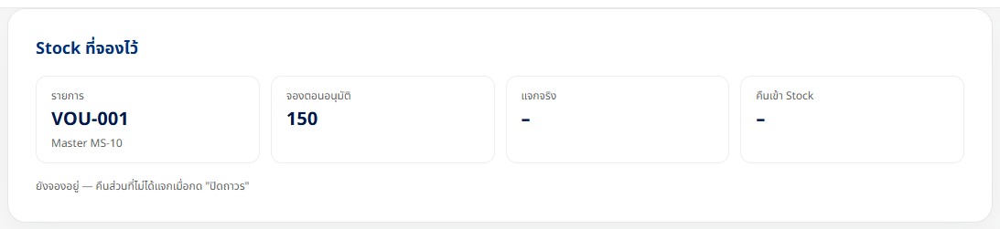
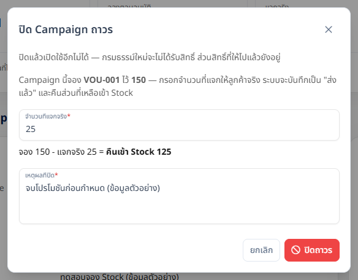
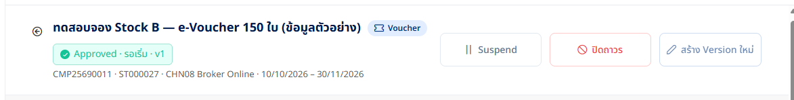
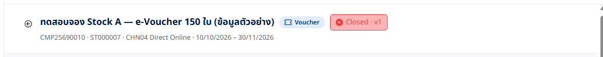
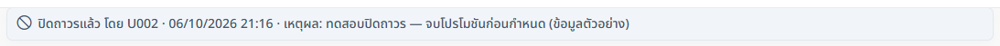
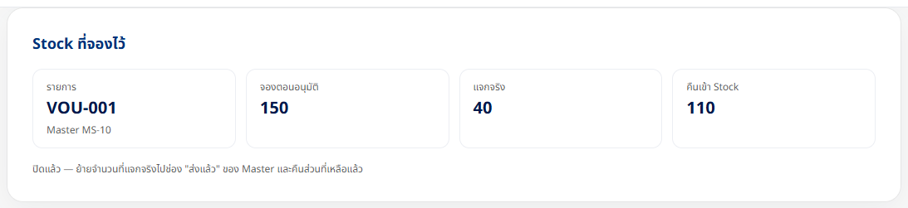
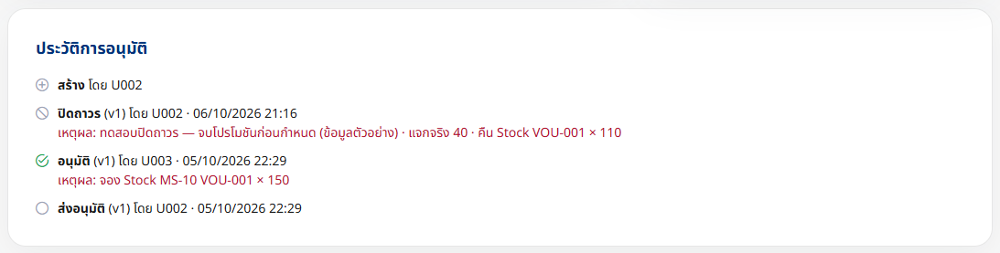
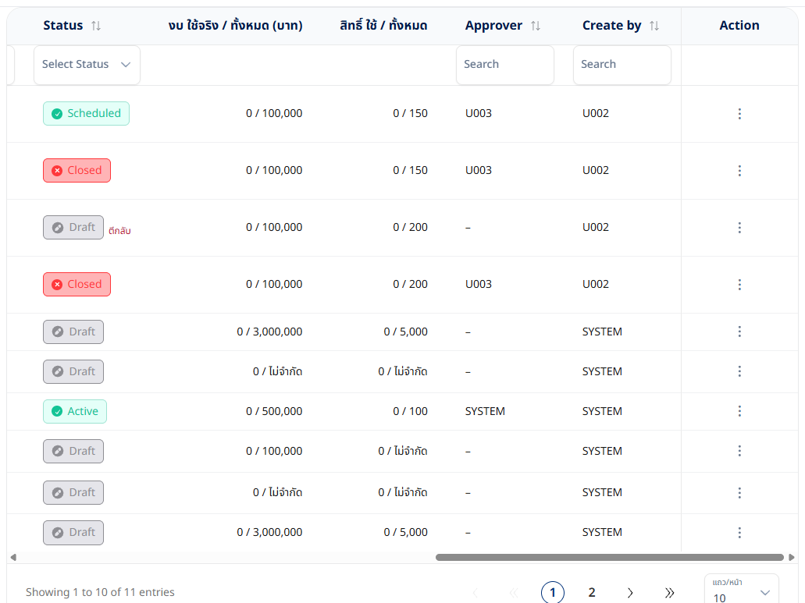
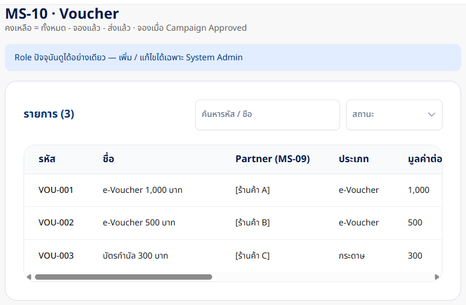

ปิด Campaign ถาวร + คืน Stock
สรุปงานและผลทดสอบ · TESLA Management v2 + Tesla Admin API v2
6 ต.ค. 2569 · DEV (TESLA_ADMIN) · ทดสอบผ่านหน้าจอจริง
11/11กรณีทดสอบบน DEV ผ่าน
701/701unit test (
dotnet test) · ใหม่ 20100 → 210VOU-001 คงเหลือ หลังปิด CMP25690010
0migration ใหม่
ปัญหาที่แก้
ตอนอนุมัติ Campaign ประเภท Voucher (MS-10) / ของรางวัล (MS-16) ระบบ จอง Stock ไว้ (reserved_qty) แต่ ไม่เคยคืน — Campaign จบไปแล้ว Stock ก็ยังถูกล็อก ทำให้ Campaign ใหม่อนุมัติไม่ได้ทั้งที่ของยังอยู่จริง
การตัดสินใจ (6 ต.ค.): ทางเลือก ข — ผู้ใช้กรอก จำนวนที่แจกจริง ตอนปิด (ยังไม่มีบัญชีการแจกสิทธิ์) · มีปุ่ม ปิด Campaign ถาวร
Flow
อนุมัติ → จอง 150→
ใช้งาน / Suspend→
กด ปิดถาวร + แจกจริง 40 + เหตุผล→
จองแล้ว −150 · ส่งแล้ว +40 · คืน 110→
สถานะ Closed (เปิดใช้อีกไม่ได้)
สิ่งที่สร้าง
BE Tesla Admin API
POST /api/v2/campaign/{code}/closebody{ reason, deliveredQty }- Approved / Suspended → v1
INACTIVE+ historyINACTIVEที่TO_STATUS = CLOSED(ไม่ต้อง migration) - transaction เดียว: lock Campaign · อ่านยอดจองใน lock · ปรับ
reserved_qty/delivered_qty· บันทึกfeV2.closed+stockReserved.deliveredQty / releasedQty - Resume / ปิดซ้ำ ของ Campaign ที่ปิดแล้ว → 409
- GET detail คืน
stockและclosed
FE TESLA Management v2
- ปุ่ม ปิดถาวร + กล่องกรอกจำนวนที่แจกจริง (แสดงจำนวนที่จะคืน) และเหตุผล
- การ์ด Stock ที่จองไว้ · แถบผู้ปิด / เวลา / เหตุผล · ประวัติ "ปิดถาวร"
- เตือน Campaign หมดอายุที่ยังจอง Stock
- ป้าย Closed ในรายการ / Wizard · Mock server มีเส้น close (ไม่มี Stock)
ผลทดสอบบน DEV
| # | กรณี | ผลที่ได้ | ผล |
|---|---|---|---|
| CL-01 | หน้าจอ: กดปิดถาวรโดยไม่กรอกอะไร | เตือน "กรุณาระบุเหตุผลที่ปิด Campaign" | ผ่าน |
| CL-02 | หน้าจอ: กรอกเหตุผล ไม่กรอกจำนวน | เตือน "กรุณาระบุจำนวนที่แจกจริงเป็นจำนวนเต็ม 0 – 150" | ผ่าน |
| CL-03 | API: deliveredQty 151 / 1.5 / ไม่ส่ง · reason ว่าง | 400 พร้อมข้อความไทยตามกรณี | ผ่าน |
| CL-04 | หน้าจอ: CMP25690010 (จอง VOU-001 × 150) ปิดโดยแจกจริง 40 | Closed · toast "คืน Stock VOU-001 × 110" · การ์ด Stock 150 / 40 / 110 · ประวัติมียอด | ผ่าน |
| CL-05 | Master MS-10 หลัง CL-04 | VOU-001 จองแล้ว 200 → 50 · ส่งแล้ว 200 → 240 · คงเหลือ 100 → 210 | ผ่าน |
| CL-06 | API: ปิดซ้ำ / Resume / Suspend Campaign ที่ปิดแล้ว | 409 ทั้ง 3 กรณี | ผ่าน |
| CL-07 | หน้าจอ: CMP25690008 (ส่วนลด ไม่มี Stock) Suspend → ปิดถาวร | กล่องถามแค่เหตุผล · Closed | ผ่าน |
| CL-08 | Campaign list + ตัวกรอง ENDED | ป้าย Closed · นับในการ์ด Inactive | ผ่าน |
| CL-09 | หน้าจอ: อนุมัติ CMP25690011 (ต้องจอง 150) ที่เคยอนุมัติไม่ได้เพราะ Stock ไม่พอ | อนุมัติได้หลัง Stock ถูกคืน · จอง 150 → คงเหลือ 210 → 60 | ผ่าน |
| CL-10 | หน้าจอ: เปิดกล่องปิดถาวร CMP25690011 กรอก 25 | แสดง "จอง 150 − แจกจริง 25 = คืนเข้า Stock 125" · กดยกเลิก (ไม่ได้ปิด) | ผ่าน |
| CL-11 | Console ของหน้าเว็บระหว่างทดสอบ | ไม่มี error | ผ่าน |
สถานะข้อมูลบน DEV หลังทดสอบ
| รายการ | สถานะ | หมายเหตุ |
|---|---|---|
| CMP25690010 | Closed | แจกจริง 40 · คืน 110 |
| CMP25690008 | Closed | Suspend แล้วปิด · ไม่มี Stock |
| CMP25690011 | Approved · รอเริ่ม | จอง VOU-001 × 150 (เดิมรออนุมัติ — Stock ไม่พอ) |
| VOU-001 (MS-10) | ทั้งหมด 500 · จองแล้ว 200 · ส่งแล้ว 240 | คงเหลือ 60 |
รูปหน้าจอ









Unit test ที่เพิ่ม (BE)
CampaignV2ApprovalTests — ปิดแบบมี / ไม่มี Stock · input ผิด 5 แบบ · สถานะที่ปิดไม่ได้ 3 แบบ · repository ปฏิเสธ 3 แบบ · Resume หลังปิด · detail แสดงยอดและผู้ปิด · LogActionOf / FeStatus แยก CLOSED จาก SUSPENDED → รวม 701/701 ผ่าน
ข้อจำกัด / งานต่อ
- ต้องรู้ Campaign หมดอายุ ไม่คืน Stock เอง — ต้องกดปิดถาวร (หน้ารายละเอียดเตือนให้)
- ต้องรู้ จำนวนที่แจกจริงมาจากผู้ใช้ — เปลี่ยนเป็นยอดจริงเมื่อมีบัญชีการแจกสิทธิ์ (ทางเลือก ก)
- API ยังไม่ตรวจ Role จาก UAM (เหมือน Suspend) — อยู่ในงาน "ตรวจ Role จาก UAM"
- ถ้าหน้าจอ v1 เปลี่ยน INACTIVE กลับเป็น PUBLISHED ได้ จะข้ามการกันนี้ — ยังไม่ได้ตรวจหน้าจอ v1
- ช่องจำนวนแสดงยอดคืนหลังคลิกออกจากช่อง (พฤติกรรมเดิมของช่องตัวเลข)
เอกสาร / Commit
| คู่มือ 1.2 §10.1 | 11-online-content-manual.md · Online-Content-Manual.pdf (25 หน้า) |
BE Dev | fd73075 feat(v2): close campaign for good + release the reserved stock |
FE dev | 499f37c feat(fe-v2): close campaign for good + settle the reserved stock |